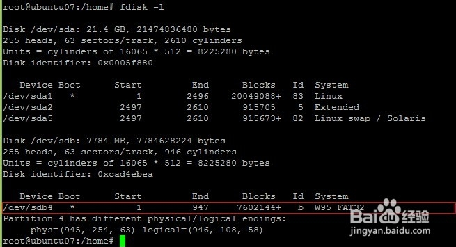

Linux下把U盘格式化为fat32
- |
- 浏览：3714
- |
- 更新：
- |
- 标签：u盘
百度经验:jingyan.baidu.com
在linux下也是支持fat32的，如果U盘中了病毒可以插入linux系统进行格式化比较安全，下面介绍如何在linux下把u盘格式化为fat32的方法
一、执行fdisk -l查看linux设备，我的U盘是sdb4

二、执行mkfs -t vfat /dev/sdb4
这样就可以格式化完成了然后在挂载就可以使用了，非常简单。mkfs -t 后面指定格式可以是ext3格式或者其它格式。
经验内容仅供参考，如果您需解决具体问题(尤其法律、医学等领域)，建议您详细咨询相关领域专业人士。
举报作者声明：本篇经验系本人依照真实经历原创，未经许可，谢绝转载。


![]()